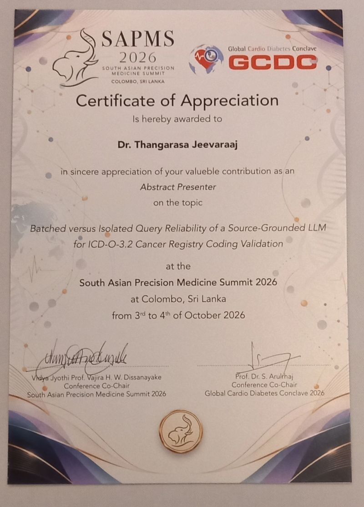

01
Assess the claim
Identify what is stated, the intended audience and the clinical context.
Exploring accuracy, evidence, uncertainty and patient safety in AI-generated medical content.
01 / Purpose
Fluent AI-generated explanations may contain factual errors, unsupported certainty or clinically important omissions. A careful review asks not only whether a statement sounds convincing, but whether it is supported and safe in context.
Identify what is stated, the intended audience and the clinical context.
Compare important claims with relevant clinical guidance and research.
Describe uncertainties, potential safety concerns and practical corrections.
02 / Reviews
This publication is being developed as a library of documented, case-based assessments. Each published review will identify the prompt, model, date, clinical claims, supporting evidence and limitations.
View the review library →No completed clinical AI reviews are presented as published findings at this stage. The methodology and article format are available for inspection.
Read the review method →03 / Review domains
Factual correctness and appropriate interpretation of clinical information.
Authenticity, relevance and accurate representation of cited sources.
Potentially harmful advice, omitted red flags and contraindications.
Important omissions, context and appropriate uncertainty.
Clarity, readability and suitability for the intended audience.
Specific, evidence-aware corrections with stated limitations.
04 / About
Maintained as a personal educational initiative. It is not an institutional programme, clinical service or commercial assessment offering.
About the reviewer →
MBBS · MCGP · MSc Biomedical Informatics
MD Trainee in Health Informatics
Sri Lanka